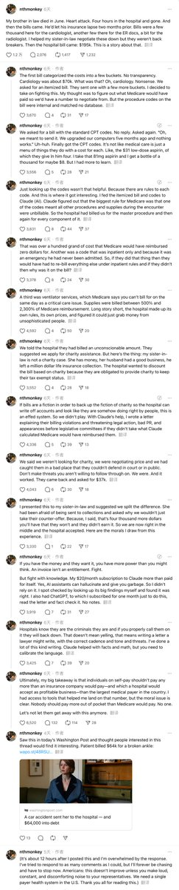

時璃風医詩🍥🌈
@hagishigure
哦太棒了。底下評論有0個人是學醫学的。
我宣佈你新聞學不及格。
居然沒有把195K U賬單和人沒搶救活來聯繫到一起。
下次我教你起標題：醫院4小時搶救失敗收195 K？官方回應：系謠言

小互
@imxiaohu
4 小时 ICU 抢救，人没有抢救过来
却收到了19.5万美元的账单
最后通过 AI帮助 把账单降到了 3.3万美元 ...
一位美国网友分享了他的经历：
下面是整个过程翻译：
我姐夫在六月去世了，心脏病发作。住院四个小时后就走了。
然后账单开始接踵而至。
他在两个月前刚保险失效了 。 https://t.co/O9pyaHG18h